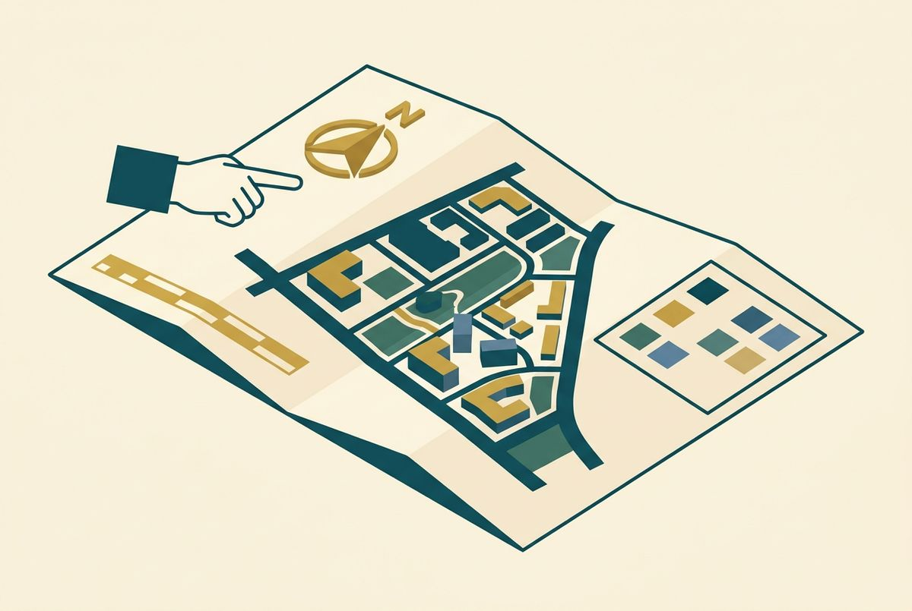
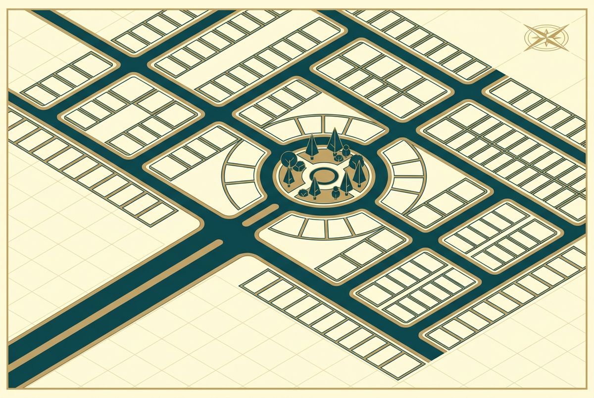

Home / How-to
How to Read a Plotted-Development Master Plan
A plotted-development plan tells a story about access, movement and everyday usability.
A plotted-development plan is more than a sheet filled with rectangles. Read carefully, it explains how you will enter the development, reach your plot, move through the neighbourhood and relate to open spaces, amenities and surrounding land.
The key is to begin with the approved plan — not the most attractive marketing illustration — and work from the overall layout down to the exact plot.
First, confirm which plan you are viewing
Ask whether the document is:
Key pointWork from the sanctioned layout, not the brochure. Look for the approval reference, date, authority, survey numbers, scale and revision before reading anything else.
- The sanctioned layout approved by the competent authority
- A later approved revision
- A conceptual master plan
- A marketing illustration
A brochure plan may simplify details or add visual landscaping. It is useful for orientation but should not replace the sanctioned layout. Look for the approval reference, date, authority, survey numbers, scale and plan revision. The exact plot offered to you should appear within the approved boundary.
1. Start with orientation, scale and legend
Find the north arrow and understand how the site is oriented. Then locate the scale and legend. These explain how distances are represented and what different lines, colours or hatches mean.

Key pointNorth arrow, scale and legend first. Without them a drain can look like a road edge and a landscape strip can look like a buildable plot.
Without them, it is easy to mistake a drain for a road edge, a landscape strip for a buildable plot or a conceptual boundary for a legal one. If a symbol is unclear, ask for the official legend rather than guessing.
2. Locate the complete development boundary
Trace the outer boundary of the approved layout and match it with the listed survey and subdivision numbers. Check whether the project is shown in phases and whether the plot you are considering belongs to the currently approved and marketed phase.
Also notice what sits beyond the boundary: existing roads, water channels, vacant land, industry, institutions, settlements or future development parcels. The experience of a plot is influenced by its surroundings as much as its position inside the layout.
3. Identify your exact plot
Locate the plot number and confirm:
- Frontage and depth
- Total area
- Shape and corner conditions
- Direction of the access road
- Adjacent plots or reserved areas
- Any splay, curve or irregular edge
Do not assume every plot in a row is identical. Corner plots, plots beside curved roads and irregular parcels may have different dimensions. Match the plan against the plot schedule, agreement, draft deed and on-ground survey.
4. Read the road network as a hierarchy
Begin with the main entrance and follow the route to the plot. Identify the approach road outside the project, the primary internal road and the smaller streets serving individual parcels.

Key pointRoad widths must be marked on the sanctioned plan. Confirm the layout has legal access to a public road and that internal roads meet the approval conditions.
Road widths should be marked on the sanctioned plan. Wider is not automatically better in every situation, but the hierarchy affects turning, traffic, walking, services and the character of the neighbourhood. Check for dead ends, tight corners and whether the route shown on paper exists physically and legally.
Most importantly, confirm that the project has clear access to a public road and that internal roads are handled as required by the approval conditions.
5. Notice open-space and public-purpose reservations
Approved layouts may contain areas reserved for open space, parks, public purposes or local-body use. These should be clearly distinguished from saleable plots.
Look at their location, access and relationship to the plot you are considering. An open space nearby may be attractive, but verify what the plan legally reserves it for. Never rely on a salesperson's description of an unlabelled green patch.
6. Separate approved common areas from proposed amenities
Clubhouses, play areas, landscape zones and community spaces may appear on a presentation plan. Ask which are part of the sanctioned plan, which are separately approved and which are only proposed project features.
Key pointFor every amenity ask: where exactly, approved or proposed, who owns and maintains it, is there a charge, and is delivery written into the agreement.
For each promised amenity, clarify:
- Its exact location and size
- Whether it is approved, proposed or completed
- Who will own and maintain it
- Whether buyers will pay a maintenance charge
- Whether delivery is included in the agreement
This keeps the decision grounded in accountable information rather than imagery alone.
7. Look for utilities and drainage
A good development plan should help explain how essential services are organised. Ask about storm-water drainage, electricity, street lighting, water arrangements, sewage or sanitation systems, waste handling and any utility reservations.
The drawing may not show every engineering detail. Request the relevant service information and inspect the site. Natural slopes and storm-water paths are particularly important because land does not behave like a flat graphic during heavy rain.
8. Check levels, contours and natural features where relevant
If the land is sloping or contains channels, rock, trees or other natural features, ask for the survey and level information used to plan it. Contour lines show changes in elevation. Closely spaced contours usually indicate a steeper slope; wider spacing suggests a gentler one.
This can affect drainage, road formation and future construction. A qualified architect, engineer or surveyor can help interpret technical drawings before you choose a plot.
9. Understand the plot's buildability separately
A plotted layout establishes parcels and infrastructure, but it does not automatically answer every question about the house you may build. Building rules can affect setbacks, height, access and permissible use.
Before choosing a plot for a specific home design, consult a qualified architect or planning professional about the current rules and the plot's dimensions. This is especially important for narrow, irregular or corner plots.
10. Compare three versions of the same reality
The strongest check is to compare:
Key pointThe sanctioned plan, the legal documents and the physical site must tell the same story. If they differ, pause until the difference is explained and documented.
Plot number, boundary, measurements, access and common areas should tell the same story across all three. If they do not, pause until the difference is explained and documented.
- Can you show me this exact plot on the approved plan and on the ground?
- What is the approval reference and current plan revision?
- What are the frontage, depth and total area?
- Which road provides legal access, and what width is approved?
- Which open spaces or amenities are approved, proposed or complete?
- How will water, drainage, electricity and street lighting be provided?
- Is the development phased, and what may be built beside this phase later?
- Do the agreement and draft sale deed use the same plot and survey details?
A clear master plan should make a development easier to understand. When the plan, documents and land align, a buyer can move from visual attraction to informed confidence.
Frequently Asked Questions
Frequently Asked Questions
Keep Reading
Read it before
you decide.
Three guides written for Tamil Nadu plot buyers — documents, approvals and how to read a plan.
Free site visit
Tell us where to call.
Leave your number and someone from the MRC team — not a call centre — will call you to fix a time.
Thank you.
We have your number. Expect a call from the MRC team within one working day.